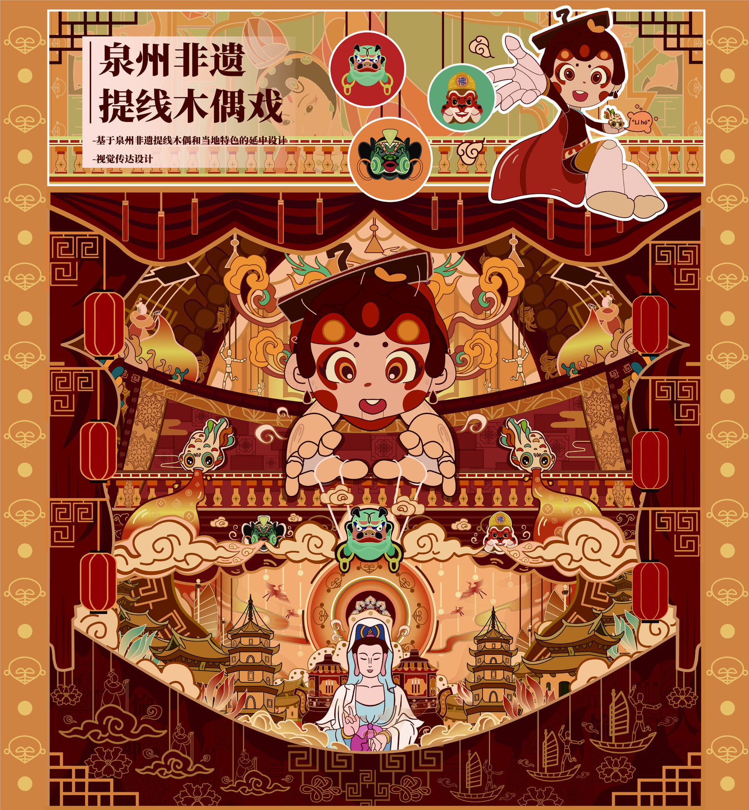
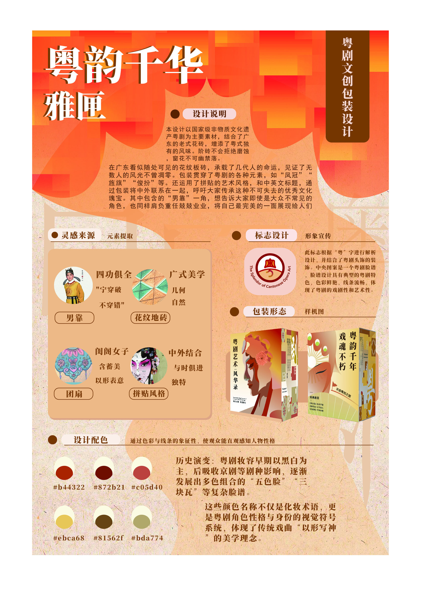
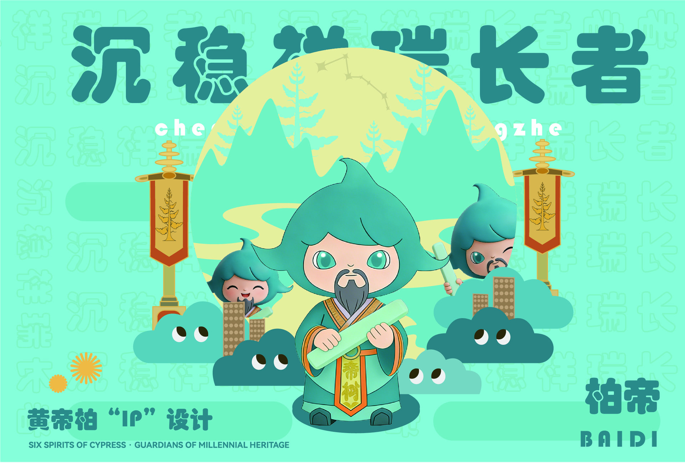

01
教育背景
东莞市纺织服装学校
计算机平面设计专业
2026年毕业
VISUAL DESIGN / PORTFOLIO 2026
KONG LANG
求职方向 / 视觉设计实习生
品牌视觉 / 包装设计 / 文化IP / 插画

PROFILE / CAPABILITIES
01
东莞市纺织服装学校
计算机平面设计专业
2026年毕业
02
视觉设计
品牌视觉
包装设计
文化IP视觉
03
海报与版式设计
包装视觉设计
插画与IP设计
视觉延展
04
SELECTED PROJECTS / 01—03
视觉设计、品牌视觉、包装设计与文化IP探索。
毕业设计 / 文化IP / 视觉系统
组长、核心概念与主要视觉设计
从个人泉州旅行体验出发，以插画、二维IP、海报与视觉延展表达对泉州提线木偶戏的观察与理解。
VIEW CASE STUDY ↗

文化IP / 视觉延展
角色优化、插画、海报、包装及文创延展
基于已有基础IP优化角色表现，并围绕黄帝陵古柏文化完成插画、海报、包装及文创视觉延展。
VIEW CASE STUDY ↗CONTACT / OPPORTUNITIES